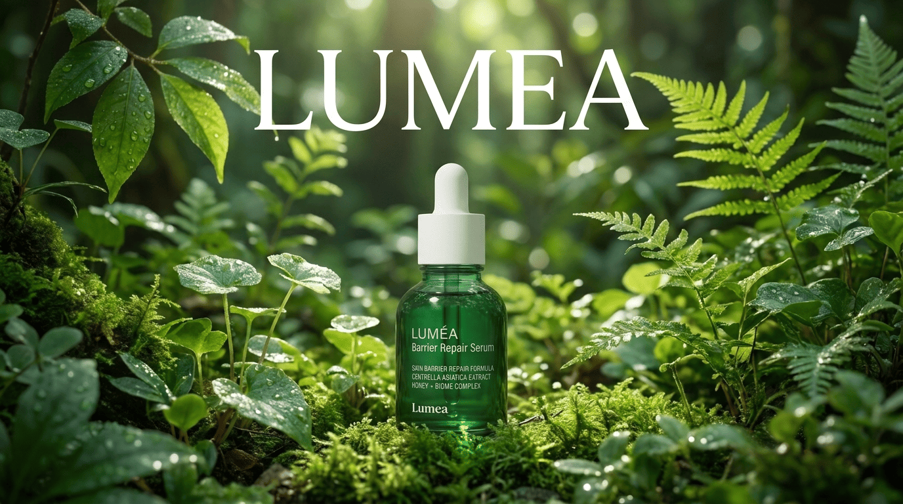
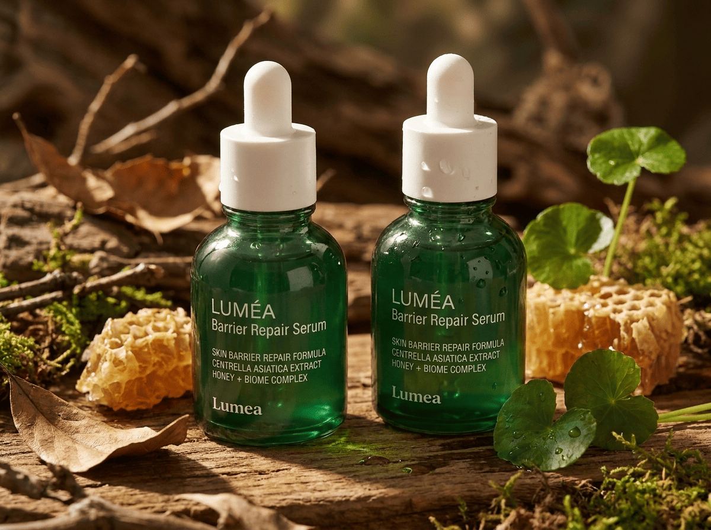
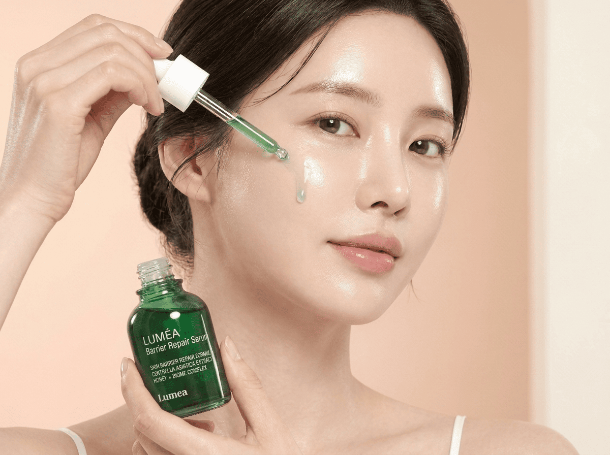
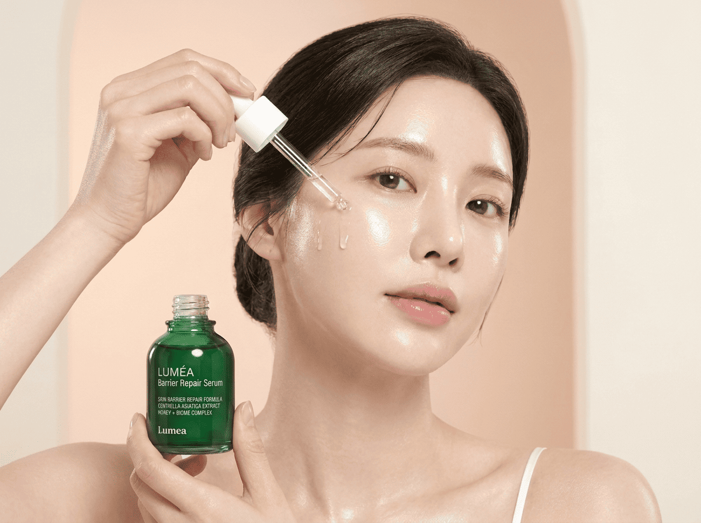
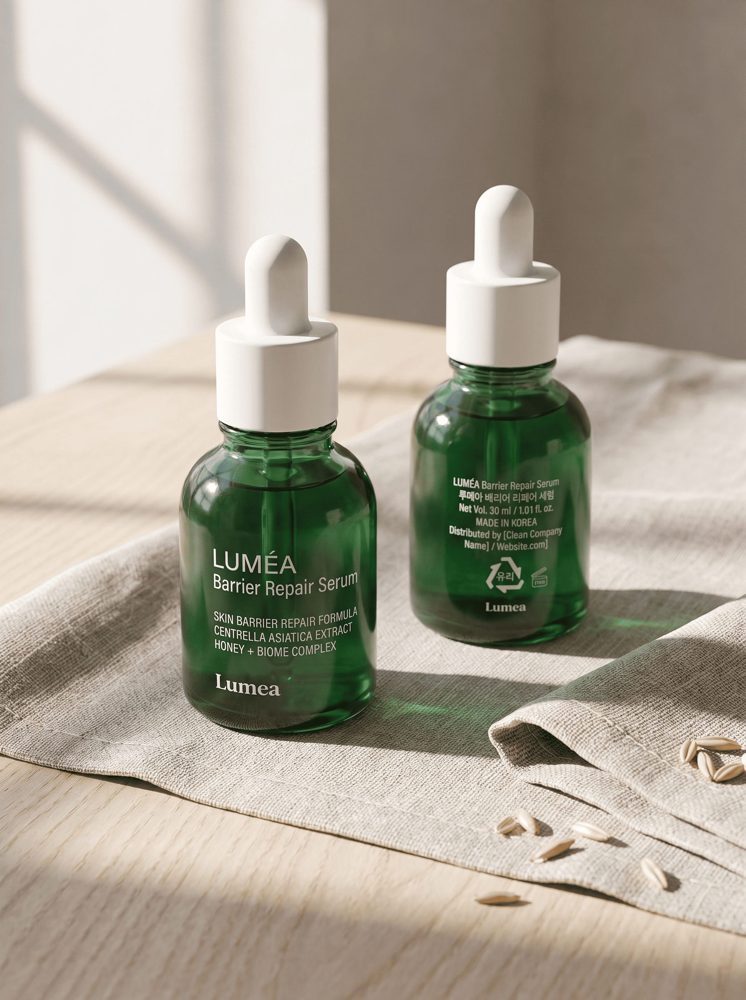

세라마이드 · 판테놀 · 히알루론산으로
보습하고 진정 케어까지
이런 느낌이 있다면
세안 후에 피부가 당기고, 보습을 해도 금방 사라지는 것 같고, 새 제품을 고를 때마다 조심스러워진다면
이런 느낌은 왜 생기는 걸까요?
장벽, 보습, 진정
세 가지를 함께 챙기는 케어
제품을 하나하나 겹쳐 바르기 어렵다면, 역할이 분명하고 가볍게 바를 수 있는 세럼부터 시작해 보세요.


이 세 가지를 한 병에 담았습니다.
LUMÉA Barrier Repair Serum

장벽 케어, 진정, 보습을
가벼운 세럼 하나로
LUMÉA Barrier Repair Serum은 세라마이드, 판테놀, 히알루론산을 담은 피부 장벽 케어 세럼이에요.
세 가지 성분은 각각 어떤 역할을 할까요?
성분마다 역할이 분명해요
세 가지 핵심 성분이 장벽, 진정, 보습을 각각 맡아요.
피부 장벽을 이루는 지질 성분으로 알려져 있어요.
진정과 보습 케어에 쓰이는 성분으로 알려져 있어요.
대표적인 보습 성분으로 알려져 있어요.
성분의 일반적인 특성에 대한 설명이며, 개인에 따라 사용감은 다를 수 있어요.
장벽 케어를
무겁지 않게
가벼운 사용감의 세럼으로, 부담 없이 루틴에 더해 보세요.
성분과 사용감은 알겠는데, 믿을 수 있을까요?
알려진 만큼만,
있는 그대로 말씀드려요
주요 성분과 성분의 역할을 솔직하게 안내합니다.
"바를 때 물처럼 가볍게 발려서 아침에도 부담이 없어요. 흡수도 금방 되는 편이고, 화장할 때 밀리지 않았어요. 재구매 의사 있습니다."
"토너 다음에 한 번만 발라도 루틴이 간단해져서 좋아요. 바르고 나서 답답한 느낌이 없어서 꾸준히 쓰게 됩니다."
"텍스처가 묽은 편이라 얼굴 전체에 고르게 발려요. 향이 강하지 않고, 바른 다음 날 아침에도 피부가 편안하게 느껴졌어요."
피부를 위한 케어는 단계가 늘어날수록 꾸준히 하기 어려워집니다. 장벽도 챙기고, 보습도 하고, 진정 케어까지 하려면 챙겨야 할 제품이 많아지기 때문이에요. LUMÉA Barrier Repair Serum은 이런 고민에서 출발했어요. 세라마이드, 판테놀, 히알루론산 세 가지 성분으로 장벽 케어, 진정, 보습을 하나의 세럼에 담고, 매일 쓰기 부담 없도록 가벼운 사용감으로 만들었습니다.
정제수, 글리세린, 부틸렌글라이콜, 판테놀, 소듐하이알루로네이트, 세라마이드엔피, 1,2-헥산다이올, 카프릴릴글라이콜, 베타인, 트레할로스, 잔탄검, 카보머, 트로메타민, 소듐포스페이트, 다이소듐이디티에이, 에틸헥실글리세린
- 1. 사용 중이나 사용 후 직사광선에 의해 붉은 반점, 부어오름, 가려움증 등 이상 증상이 생기면 전문의와 상담하세요.
- 2. 상처가 있는 부위에는 사용을 자제해 주세요.
- 3. 어린이의 손이 닿지 않는 곳에 보관하고 직사광선을 피해 보관해 주세요.
궁금한 점이 풀렸다면, 이제 만나 보세요.
장벽 케어를
가볍게 시작하는 세럼
LUMÉA Barrier Repair Serum · 38,000원
배송 및 환불 정책은 결제 페이지에서 확인하실 수 있어요.
